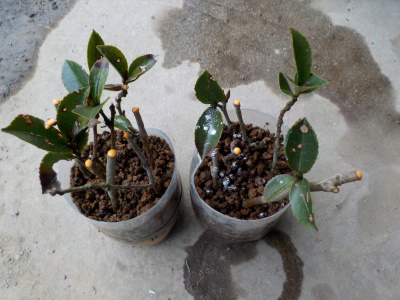
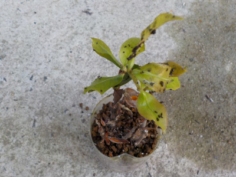
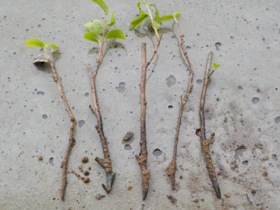
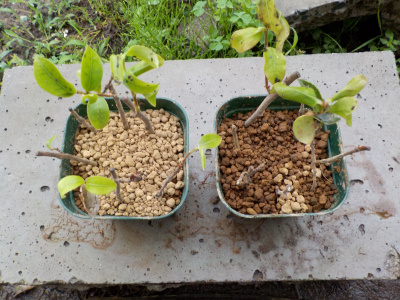
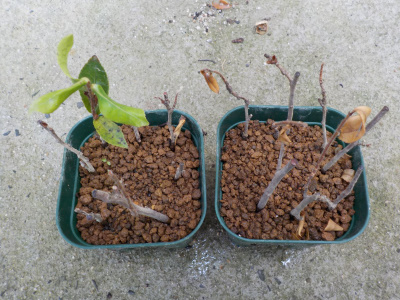
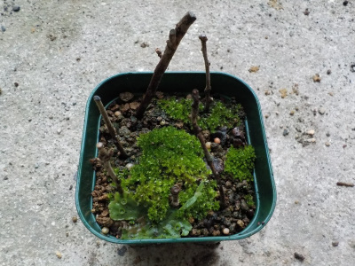

ペットボトルを使ってサザンカの挿し木をしました。
更新日 : 2020/03/01

家にサザンカは何本かあるんですが、白い花は少ないので増やすことにしました。
この木は枝が細かったです。なんか弱そう。
葉っぱに付いてる白い点々はルートンです。今日は冷たい風が強かったので、作業が雑になりました。
更新日 : 2020/03/01

家にサザンカは何本かあるんですが、白い花は少ないので増やすことにしました。
この木は枝が細かったです。なんか弱そう。
葉っぱに付いてる白い点々はルートンです。今日は冷たい風が強かったので、作業が雑になりました。
更新日 : 2020/06/07

密閉挿しなんですけど、私のペットボトルは少し隙間があるので、そこからナメクジが入ったようです。
糞が沢山あるので、葉っぱが沢山食べられたかな。
ペットボトルの上まで木が伸びているので、来週には鉢を用意して植え替えしようと思います。
更新日 : 2020/06/14

上に葉っぱが伸びていたので、てっきり発根しているものと思っていましたが根っこが確認出来ませんでした。

抜いてしまったものを元に戻す気になれなかったので、普通に小さな鉢に植えました。
今梅雨なので、普通に挿し木です。
更新日 : 2020/07/04

ペットボトルの密閉空間の時はよく成長していたんですが、ペットボトルから出したらドンドン枯れだしました。
残ったのは1本だけです。
こうなるんだったら出さなければよかった。
ペットボトルの密閉挿しって効果が凄いんですね。
更新日 : 2021/05/15

根っこもちゃんと出て育っていたんですが、枯らしてしまいました。
残念。
サザンカは実生が育っているので挿木はもうなくていいかな。
サザンカが咲くと、冬の準備をしなきゃって思います。